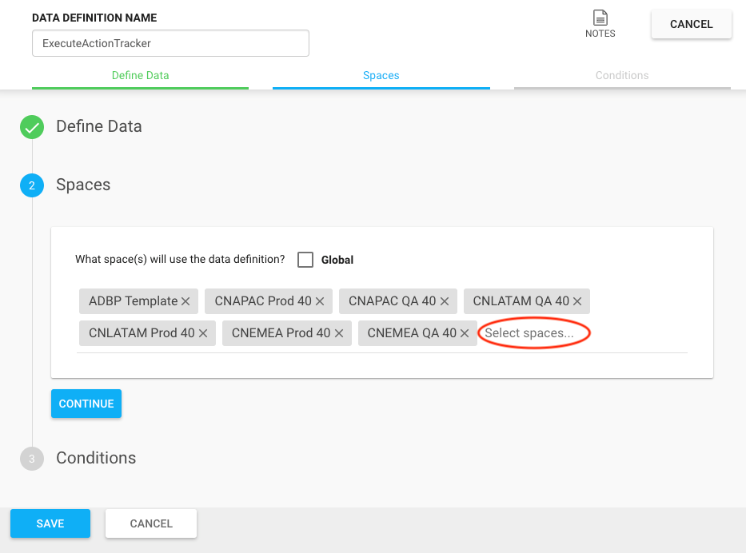
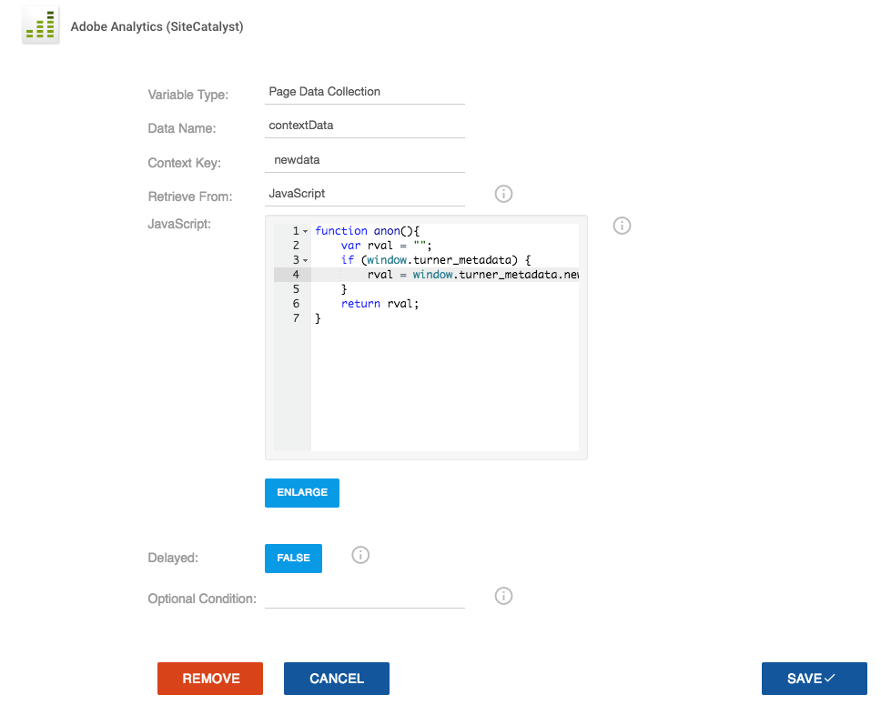
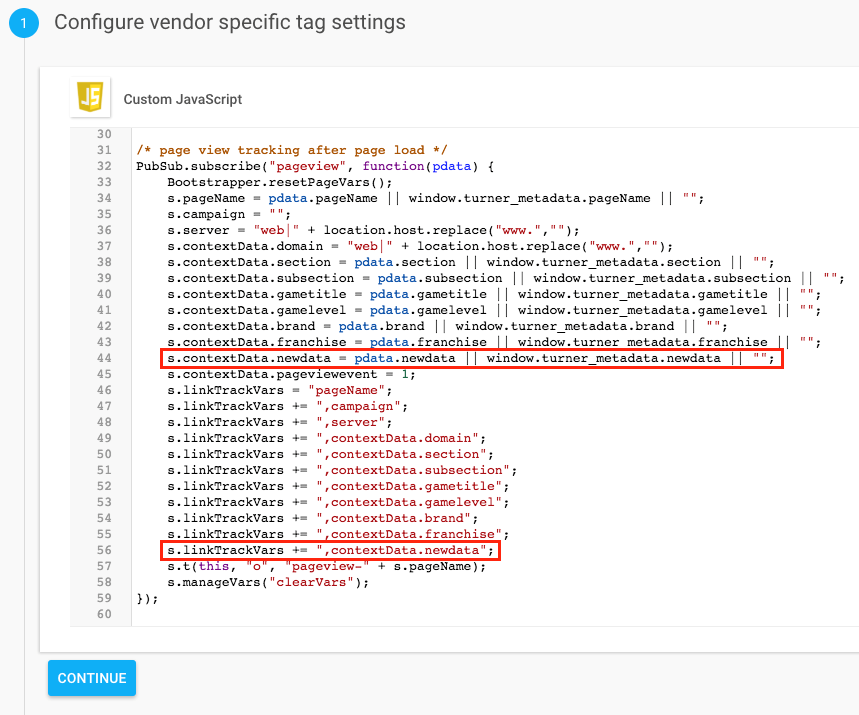
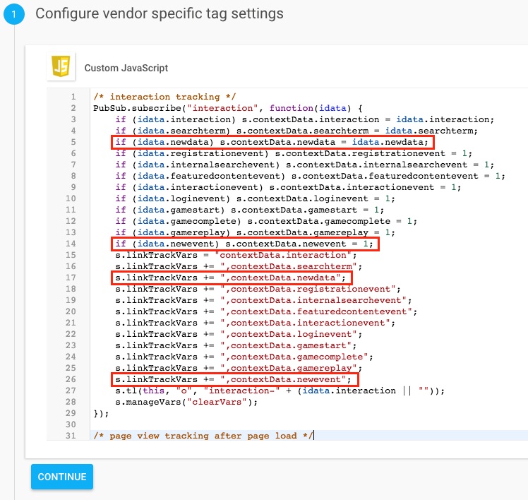
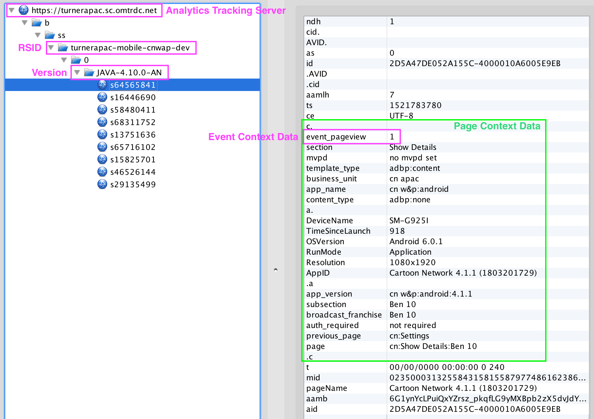
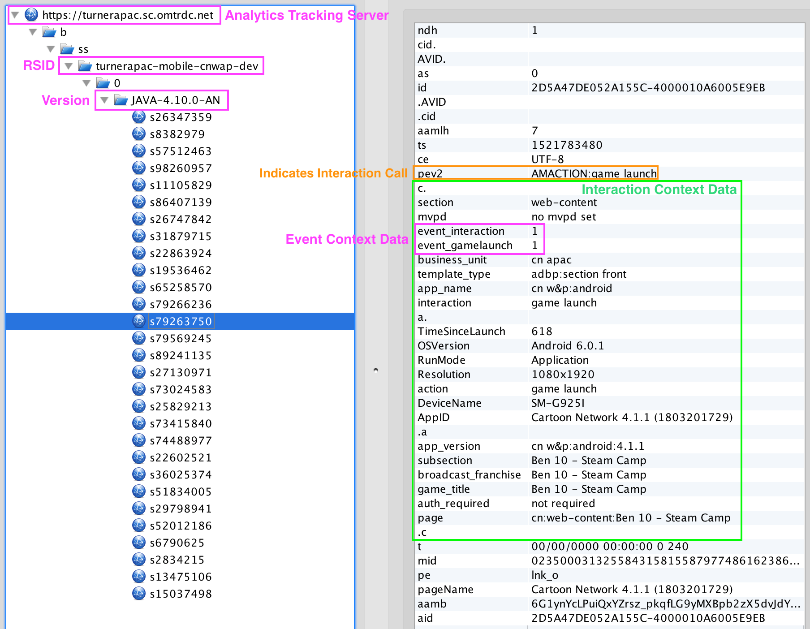
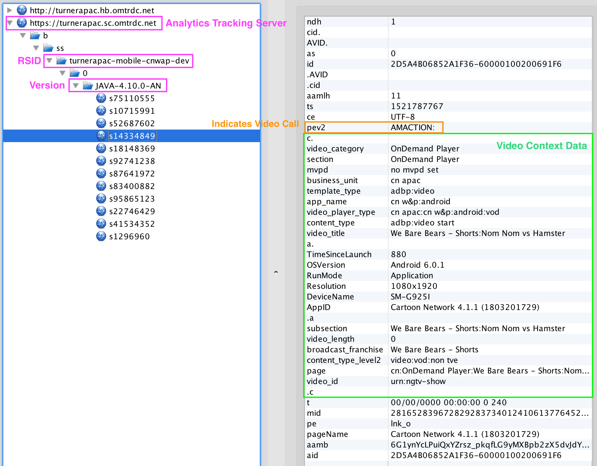
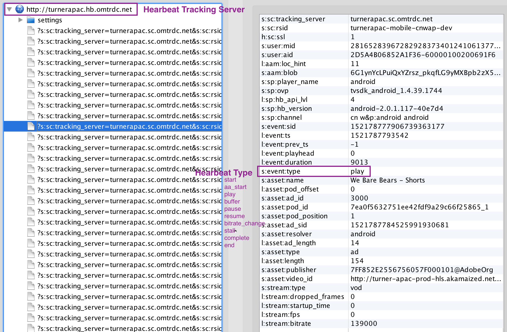

Prerequisites
- Analytics SDR
- Access to Ensighten
- Adobe configuration values :
- Report Suite ID (rsid)
- Adobe Login Company – select from below table
- Secure Tracking Server – select from below table
- Non-Secure Tracking Server – select from below table
- Namespace – select from below table
| Adobe Login Company | Secure and Non-Secure Tracking Server | Namespace |
|---|---|---|
| Cartoon Network New Media | cartoonnetworknewmedia.d2.sc.omtrdc.net | cartoonnetworknewmedia |
| TBS Latin America | tbslatinamerica.207.net | tbslatinamerica |
| Turner APAC | turnerapac.sc.omtrdc.net | turnerapac |
| Turner UK | turneruk.2o7.net | turneruk |
| Turner International | turnerinternational.sc.omtrdc.net | turnerinternational |
Ensighten Documentation
It is recommended to go through training videos before using Ensighten.
- Training Videos: https://www.ensighten.com/training/manage-technical/
- Adobe Training Videos: https://www.ensighten.com/training/sitecatalyst-implementation-via-manage/
- Recommended Tools: https://www.ensighten.com/training/tools/
Helpful Contacts
- Any questions – contact adaqdev@turner.com
Ensighten Implementation
1). Create a new space in Ensighten Manage and make a note of the Bootstrap include script.
Example:
<script type="text/javascript" src="//nexus.ensighten.com/turnerintl/example-space/Bootstrap.js"></script>
Best Practices
- Create a space per environment: production and non-production environments.
- Add a server side kill switch for the Bootstrap. In case of the Ensighten causing any issues on the site, you can easily take it out.
- Add an environment logic to automatically load production vs non-production Bootstrap.
- Enable Tag Alerts and Publish Alerts (Click turnerintl in the top right and select settings), so you get a notification email when someone publishes in your space.
2). Add newly recreated space(s) to the ExecuteActionTracker Data Definition within Ensighten.

3). Merge all tags from ADBP Template space to your new space. Make sure to merge all tags together.
Here are descriptions for each tag in ADBP Template space:
- Adobe Analytics – All Page View – handles every page view on the site
- Adobe Analytics – Base Code – holds the Adobe AppMeasurement Library
- Adobe Analytics – Marketing Cloud Visitor ID – holds the Adobe Visitor Library
- Adobe Analytics – Page Events – handles interaction events and post page load events
- Adobe Analytics – Video Heartbeat Library – handles Adobe video tracking
- ServerComponent Override – allows debugging from any protocols (e.g. file://)
- trackMetrics PubSub Publisher – handles video and interaction events with PubSub library
- ActionTracker – provides methods for post page load tracking (discussed under Track Action Array)
4). Update rsid, trackingServer, trackingServerSecure, visitorNamespace and linkInternalFilters values in Adobe Analytics – Base Code tag.
Example:
if (Bootstrapper.ensightenOptions.publishPath == "adbp-prod") {
var rsid = "turnerintcartoon";
} else {
var rsid = "turnerintcartoondev";
}
s.trackingServer = "turnerinternational.sc.omtrdc.net";
s.trackingServerSecure = "turnerinternational.sc.omtrdc.net";
s.visitorNamespace = "turnerinternational";
s.linkInternalFilters = "javascript:,example.com,example.net"; //include all your domains
5). Update the following Adobe VHL (Video Heartbeat Library) configuration in Adobe Analytics - Video Heartbeat Library tag.
- mediaConfig.trackingServer –
.hb.omtrdc.net - mediaConfig.playerName – name of your video player (e.g. AVPlayer, HTML5 Player)
- mediaConfig.channel – name of your channel
- mediaConfig.appVersion – version of your video player
- mediaConfig.ovp – name of online video platform through which content gets distributed
Example:
var mediaConfig = new MediaHeartbeatConfig();
mediaConfig.trackingServer = "turnerinternational.hb.omtrdc.net";
mediaConfig.playerName = "example player";
mediaConfig.channel = "example channel";
mediaConfig.debugLogging = false;
mediaConfig.appVersion = "example 1.2.3";
mediaConfig.ssl = false;
mediaConfig.ovp = "example ovp";
Commit vs Publish
Ensighten offers two different Bootstrap.js domains depending on the status of your tag.
- When a tag is committed, it is moved to nexus-test.ensighten.com domain.
- When a tag is published, it is moved to nexus.ensighten.com domain.
This is often helpful moving changes to a production environment. After merging all changes to the production space within Ensighten; commit the tags and use the nexus-test.ensighten.com domain to verify the changes before publishing. Typically, this is done via a local proxy, such as Charles Proxy or using the Ensighten Browser Extension.
Example:
//nexus-test.ensighten.com/turnerintl/example-space/Bootstrap.js
Site Implementation (Global Standard)
Example:
<html>
<head>
<script>
var turner_metadata = {
"products": "category;product;quantity;price",
"productsevent": "prodView or purchase",
"section": "site section",
"searchterm": "search term",
"region": "region",
"subregion": "subregion",
"country": "country",
"brand": "brand of the site",
"franchise": "franchise of content",
"subsection": "site section level 2",
"contenttype": "content type",
"contenttitle": "content title",
"contentID": "content ID",
"adobehashid": "adobe hash ID",
"authorizedvhl": "authorized",
"presentationtemplate": "presentation template",
"featuredcontent": "featured content",
"registration": "description of registration",
"logintype": "login type",
"authstate": "authentication state of user",
"englishname": "english name",
"gametitle": "game title",
"gamelevel": "game level reached",
"gamemilstone": "game milestone",
"micrositename": "microsite name",
"micrositeadv": "microsite advertiser",
"trackAction" : []
};
</script>
<script src="//nexus.ensighten.com/turnerintl/example-space/Bootstrap.js"></script>
</head>
</html>
A global standards implementation starts with two steps. In the
of every page:- Add a JavaScript Object named turner_metadata
- Add a call to an external JavaScript file; the Ensighten Bootstrap.js
Turner Metadata Object
In the context of HTML based content (e.g., web sites), the turner_metadata object is:
- A window-scoped variable
- Defined as turner_metadata
- Follows JSON Syntax
Basic Properties
- Object Keys
- ISO Basic Latin Alphabet (See following ISO Basic Latin Alphabet table)
- Wrapped in quotes (Unicode U+0022)
- Object Values
- Preferred Characters:
- "ISO Basic Latin Alphabet" (See following ISO Basic Latin Alphabet table)
- Integers 0-9 (Unicode U+0030 through U+0039)
- White Space (Unicode U+0020)
- Delimiter "|" (Unicode U+007C)
- Wrapped in quotes (Unicode U+0022)
- Exceptions for object values:
- Quotes are omitted from integer values
- LATAM Additional Characters:
- ES Language Sites (See following LATAM-Only Spanish Characters table)
- PT Language Sites (See following LATAM-Only Portuguese Characters table)
- An array is added to turner_metadata object under the object key trackAction. As discussed later in the documentation this array is used for post page load tracking.
- Preferred Characters:
- General Notes
- Avoid Reserved & Unreserved Characters where possible per RFC 3986 https://tools.ietf.org/html/rfc3986#section-2.2
ISO Basic Latin Alphabet
| Character | Unicode Value |
|---|---|
| a | U+0061 |
| b | U+0062 |
| c | U+0063 |
| d | U+0064 |
| e | U+0065 |
| f | U+0066 |
| g | U+0067 |
| h | U+0068 |
| i | U+0069 |
| j | U+006A |
| k | U+006B |
| l | U+006C |
| m | U+006D |
| n | U+006E |
| o | U+006F |
| p | U+0070 |
| q | U+0071 |
| r | U+0072 |
| s | U+0073 |
| t | U+0074 |
| u | U+0075 |
| v | U+0076 |
| w | U+0077 |
| x | U+0078 |
| y | U+0079 |
| z | U+007A |
LATAM-Only Portuguese Characters
| Character | Unicode Value |
|---|---|
| à | U+00E0 |
| á | U+00E1 |
| â | U+00E2 |
| ã | U+00E3 |
| ç | U+00E7 |
| é | U+00E9 |
| ê | U+00EA |
| í | U+00ED |
| ó | U+00F3 |
| ô | U+00F4 |
| õ | U+00F5 |
| ú | U+00FA |
| ü | U+00FC |
LATAM-Only Spanish Characters
| Character | Unicode Value |
|---|---|
| á | U+00E1 |
| é | U+00E9 |
| ê | U+00EA |
| í | U+00ED |
| ó | U+00F3 |
| ú | U+00FA |
| ñ; | U+00F1 |
| ü | U+00FC |
Track Action Array
The trackAction array, as outlined by the Turner Metadata Object specification, is utilized in post page load tracking. Tracked activities may be pushed into the trackAction array before analytics tools have finished loading.
This method of post page load tracking utilizes two custom functions:
- actionTracker – A custom JavaScript library which:
- Reads and tracks "stored" values in the array
- Once complete, overwrites the push method only on the trackAction array
- trackData – An intermediate function which routes calls to the appropriate tracking function
In a standard implementation the actionTracker library is initialized within Ensighten using the following.
Bootstrapper.actionTracker.add("turner_metadata", "trackAction", Bootstrapper.trackData);
Where:
- "turner_metadata" is the metadata object containing the target array
- "trackAction" is the target array
- "Bootstrapper.trackData" is the function called to handle tracking
Single-Page Applications
The Bootstrap.js include will send a page view for initial page load only. To manually send page views, use the following snippet. If the automatic initial page load call is not desired, disable the Adobe Analytics – All Page View tag and use the following snippet to trigger a page view manually.
Example
turner_metadata.trackAction.push({
"type" : "pageview",
"data" : {
"products": "category;product;quantity;price",
"productsevent": "prodView or purchase",
"section": "site section",
"searchterm": "search term",
"region": "region",
"subregion": "subregion",
"country": "country",
"brand": "brand of the site",
"franchise": "franchise of content",
"subsection": "site section level 2",
"contenttype": "content type",
"contenttitle": "content title",
"contentID": "content ID",
"adobehashid": "adobe hash ID",
"authorizedvhl": "authorized",
"presentationtemplate": "presentation template",
"featuredcontent": "featured content",
"registration": "description of registration",
"logintype": "login type",
"authstate": "authentication state of user",
"englishname": "english name",
"gametitle": "game title",
"gamelevel": "game level reached",
"gamemilstone": "game milestone",
"micrositename": "microsite name",
"micrositeadv": "microsite advertiser"
}
});
Interaction Tracking
Featured Content Click
turner_metadata.trackAction.push({
"type" : "interaction",
"data" : {
"interaction" : "featured content event",
"featuredcontent" : "featured content name",
"featuredcontentevent" : 1
}
});
Interaction and Social Click
turner_metadata.trackAction.push({
"type" : "interaction",
"data" : {
"interaction" : "name of social or button"
}
});
Video Recommendation Click
turner_metadata.trackAction.push({
"type" : "interaction",
"data" : {
"interaction" : "video recommendation event"
}
});
Registration Process Start Click
turner_metadata.trackAction.push({
"type" : "interaction",
"data" : {
"interaction" : "registration start event"
}
});
Successful Registration Complete
turner_metadata.trackAction.push({
"type" : "interaction",
"data" : {
"interaction" : "registration complete event",
"registrationevent" : 1
}
});
Internal Campaign/Banner Click
turner_metadata.trackAction.push({
"type" : "interaction",
"data" : {
"interaction" : "internal campaign event",
"internalcampaign" : "campaign name",
"featuredcontentevent" : 1
}
});
Login Click
turner_metadata.trackAction.push({
"type" : "interaction",
"data" : {
"interaction" : "login start event"
}
});
Successful Login Complete
turner_metadata.trackAction.push({
"type" : "interaction",
"data" : {
"interaction" : "login complete event",
"loginevent" : 1
}
});
Interaction Tracking
Game Start Click
turner_metadata.trackAction.push({
"type" : "interaction",
"data" : {
"interaction" : "game start event",
"gamestart" : 1
}
});
Game Time Spent (every 60 second during game play)
turner_metadata.trackAction.push({
"type" : "interaction",
"data" : {
"interaction" : "game time spent event",
"gametimespent" : 60 //time spent since the last call in second
}
});
Game Replay Click
turner_metadata.trackAction.push({
"type" : "interaction",
"data" : {
"interaction" : "game replay event",
"gamereplay" : 1
}
});
> Game Level Replay Click
```javascript
turner_metadata.trackAction.push({
"type" : "interaction",
"data" : {
"interaction" : "game level replay event",
"gamelevelreplay" : 1
}
});
Game Exit Click
turner_metadata.trackAction.push({
"type" : "interaction",
"data" : {
"interaction" : "game exit event",
"gameexit" : 1
}
});
Game Complete Click
turner_metadata.trackAction.push({
"type" : "interaction",
"data" : {
"interaction" : "game complete event",
"gamecomplete" : 1
}
});
Video Tracking
Player Ready
*must be called for every new video
turner_metadata.trackAction.push({
"type" : "video",
"subtype" : "Player_Ready",
"data" : {
"playerid": "", /* unique player id if multiple instances on a page */
"content_duration": 0, /* video length in seconds */
"content_dataCreated": "", /* YYYY-MM-DD (e.g. 2018-08-30) */
"content_dataAired": "", /* YYYY-MM-DD (e.g. 2018-08-30) */
"content_name": "", /* video title */
"content_id": "", /* video id */
"content_type": "", /* clip, vod, live */
"content_showName": "", /* show name */
"content_seasonNumber": "", /* season number (e.g. 1, 2, 3, etc.) */
"content_episodeNumber": "", /* episode number (e.g. 1, 2, 3, etc.) */
"content_genre": "", /* genre (e.g. drama, comedy, etc.) */
"content_rating": "", /* rating (e.g. tvy, tvg, tvpg, tvm, etc.) */
"content_originator": "", /* originator (e.g. warnermedia, sony, disney, etc.) */
"content_network": "", /* network (e.g. fox, brabo, espn, etc.) */
"content_mvpd": "", /* mvpd (e.g. comcast, directv, dish, etc.) */
"content_authorized": "", /* true or false */
"day_part": "", /* time of day (e.g. morning, daytime, primetime, etc.) */
"content_feed": "" /* feed (e.g. east-hd, west-hd, east-sd, etc.) */
}
});
Ad Start
turner_metadata.trackAction.push({
"type" : "video",
"subtype" : "Ad_Started",
"data" : {
"ad_id": "", /* ad identifier */
"ad_duration": 0, /* ad duration in seconds */
"ad_type": "" /* ad type (e.g. preroll, midroll, postroll) */
}
});
Ad Skipped
turner_metadata.trackAction.push({
"type" : "video",
"subtype" : "Ad_Skipped",
"data" : {}
});
Ad Completes
turner_metadata.trackAction.push({
"type" : "video",
"subtype" : "Ad_Finished",
"data" : {}
});
Media Start
turner_metadata.trackAction.push({
"type" : "video",
"subtype" : "Media_Started",
"data" : {}
});
Media Buffering Start
turner_metadata.trackAction.push({
"type" : "video",
"subtype" : "Media_Buffering_Started",
"data" : {}
});
Media Buffering End
turner_metadata.trackAction.push({
"type" : "video",
"subtype" : "Media_Buffering_End",
"data" : {}
});
Media Pause
turner_metadata.trackAction.push({
"type" : "video",
"subtype" : "Media_Pause",
"data" : {}
});
Media Resume
turner_metadata.trackAction.push({
"type" : "video",
"subtype" : "Media_Resumed",
"data" : {}
});
Chapter Starts
*Media Start must be called first
turner_metadata.trackAction.push({
type : "video",
subtype : "Media_Chapter_Started ",
data : {
"chapter_name": "", /* chapter name */
"chapter_position": 0, /* chapter position integer */
"chapter_duration": 0 /* chapter duration in seconds */
}
});
Chapter End
turner_metadata.trackAction.push({
type : "video",
subtype : "Media_Chapter_Finished",
data : {}
});
Media Resume
turner_metadata.trackAction.push({
type : "video",
subtype : "Media_Finished",
data : {}
});
Content Completed and Unloaded
*trigger after post roll
turner_metadata.trackAction.push({
type : "video",
subtype : "Content_Completed",
data : {}
});
Extending Adobe Analytics Tracking
Adding a Standard Page View Variable
- Add the new data to turner_metadata object.
- Log on to Ensighten Manage,
- Open the appropriate Adobe Analytics – All Page View tag and Edit Tag.
- Click + Add button
- Select contextData for Data Name and add Context Key value.
- Select JavaScript for Retrieve From and add the code to get the new data.

- Click Save.
- Click Save & Commit.
- Optionally test the change using the nexus-test method discussed previously
- Click Publish and select the appropriate space.
- Click Publish again to push out your changes.
Adding a Page View Variable for Single Page Applications
- Add the new data to data object.
turner_metadata.trackAction.push({
"type" : "pageView",
"data" : {
"pageName" : "",
"section" : "",
"newdata" : "new value", /* example new data point */
"pageviewevent ": 1
}
});
- Log on to Ensighten Manage
- Open the appropriate Adobe Analytics – Page Events tag and click Edit Tag.
- Add new data to PubSub.subscribe("pageview", function(data) {});

- Click Save & Commit.
- Optionally test the change(s) using the nexus-test method discussed previously
- Click Publish and select the appropriate space.
- Click Publish again to push out your changes.
Adding a New Variable & Event to Interaction Tracking
- Add the new data to data object.
turner_metadata.trackAction.push({
"type" : " interaction event",
"data" : {
"newdata" : "new value", /* example new data point */
"interaction" : "", /* interaction description */
"interactionevent": 1,
"newevent" : 1 /* example new event */
}
});
- Log on to Ensighten Manage
- Open the appropriate Adobe Analytics – Page Events tag and click Edit Tag.
- Add new data to PubSub.subscribe("interaction", function(data) {});

- Click Save & Commit.
- Optionally test the change(s) using the nexus-test method discussed previously
- Click Publish and select the appropriate space.
- Click Publish again to push out your changes.
Testing Analytics Calls
Using network sniffing tools, such as Charles Proxy, you can monitor Adobe Analytics calls.
Page View Call
Every page load should fire a page view call.

Interaction Call
The main difference between a page view call and an interaction call is pev2 variable. The pev2 variable is only displaying on interaction calls.

Video Start or Ad Start Call
On every video and ad start, we are expecting a call to Adobe Analytics server (turnerapac.sc.omtrdc.net, analytic.cartoonnetwork.com, etc.). The video and ad start calls are considered interaction calls and should display pev2 variable.

Video Heartbeat Call
Video heartbeat calls are normally firing every 10 seconds while you are watching a video.
